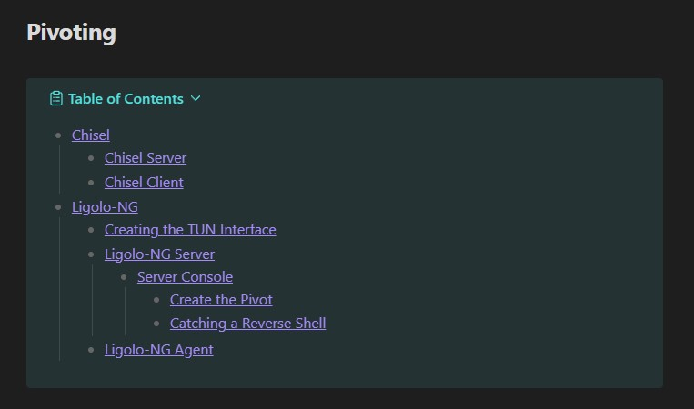
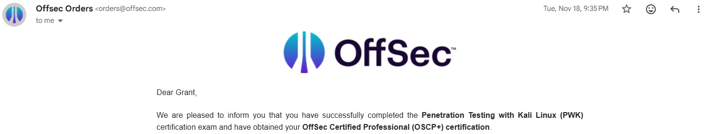

Having recently passed my Offensive Security Certified Professional exam, I wanted to give back to the OffSec community and share my three year journey towards OSCP. You heard that right. Not only three years, but passing on my fourth attempt as well. It hurts the ego to say that out loud, but I feel it is important to be fully transparent, especially for those out there considering your own attempt, or perhaps feel like giving up.
tl;dr 🥱
This post is a long one. For those of you who don’t have time for the full article, here is my proposed OSCP roadmap to go from zero to hero:
- Practical Ethical Hacking Course
- TryHackMe Jr Penetration Tester Learning Path (Either complete it or cherry-pick sections covering your weakpoints)
- TCM Security’s Practical Junior Penetration Tester
- TJ Null’s Proving Grounds List (Complete Linux and Windows list)
- OSCP PEN-200 Lab Machines (Complete OSCP mock exams and as many AD sets as you can stomach)
- Exam day!!!
Humble Beginnings
I first heard of the OSCP exam during a Cyber Security club presentation in college from the one and only Connor McGarr. After watching his buffer overflow demonstration, and learning of the OSCP exam’s difficulty, I knew I was hooked. At this time, I was still a fairly green Cyber Security student and didn’t consider preparation or further investigation until a year later.
Exploring Offensive Security
My first dive into the topic began in my sophomore year of college with the free Practical Ethical Hacking Course YouTube playlist offered by Heath Adams. The course has been updated in recent years, but even back then I felt it was a great primer of the different stages of penetration testing, and the tools used for each stage. Even at the end of the course, I still felt out of my depth and didn’t attempt any CTF boxes at the time. My note taking methodology needed a lot of work, I wasn’t seriously considering OSCP down the road. In reality, I remained a casual observer. This would change drastically my senior year of college.
Purchasing PEN-200
Halfway through my senior year in 2021, I decided to take my career seriously and push myself to learn more about offensive security. I figured if I could pass my OSCP after graduation, it would set me up for a job. This turned out to be partly true. I picked up my coursework during OffSec’s end of the year sale and began taking notes as fast as I could type. At this time, I modeled my notes after the chapter structure in the PDF itself. Remember when I said my note taking methodology needed work? This is going to be a common theme throughout this post.
I recall completing the PDF entirely about one month before graduation and spent the rest of my time practicing in the labs and revisiting extra mile challenges from the PDF. The exam purchase only included 90 days of lab access which left me rushing to prepare as much as I could, essentially grasping for straws. I scheduled my exam for June of 2022 and nearly prepared every day leading up to my exam.
Attempt #1
Since I had no idea what to expect, I spent the entire night staring at the ceiling with my mind racing. I considered all possibilities and imagined every topic I underprepared for appearing on the exam. What if HTTP is blocked on a machine and I have to transfer files another way? What if I have to exploit blind SQLi? etc, etc. Needless to say I was wound tight. After grabbing breakfast, I connected to the exam VPN, followed all prerequisite steps, and was off to the races. I decided to focus on Active Directory first, which at the time did not have assumed breach credentials. I actually managed to gain an initial foothold, and then escalated privileges to spawn a system shell on the Windows target! I don’t recall how long this took, but I can assure you it wasn’t impressive. Afterwards, I began transferring the necessary tools for post-exploit enumeration, but I wasn’t able to find credentials that could provide access to the next machine in the AD network. What was I missing??
I spent the rest of the exam toiling on the Windows machine, retracing my steps and looking for something, anything that may provide access to the next AD machine. I would occassionally review my nmap output from the other exam machines, did some basic enumeration, but never found any initial access. I felt defeated, and figured it was time to lay down and get some sleep.
I woke up around 5AM to revisit the machines for one last ditch effort, but it was futile. I knew this attempt was a fail. I decided to not waste time on drafting a PDF report, and laid down to catch up on some sleep.
The Silver Lining
Let’s fast forward to 2023 for a moment. Remember how I thought this certification would help set me up for a job? It did, but more specifically the failure set me up for my current job! Believe it or not, I was hired on to Scientific Research Corporation roughly one month after my first OSCP attempt. I didn’t discover this until a year and a half later when I decided to ask my boss:
Why did you hire me?
I was aware that my situation was unusual. It is rather uncommon for a new graduate with no prior DoD experience to be working Cyber Security right out of the gate. I can’t remember what he said word for word, but I clearly remember him mentioning my OSCP attempt as something that separated me from the rest of the candidates. To his credit as well, he wanted to give a fresh graduate a chance in Cyber Security, which I am eternally grateful for. The lesson for the reader:
Your efforts, even in failure, do not go unnoticed.
Defense by Day, Offense by Night
At this point, I began working full time at SRC starting on July 11th, 2022. OSCP was still in the back of my mind, but my full attention was now on learning the ins and outs of my new job. I knew I wasn’t ready to give up, so I saved over a few months to purchase my PEN-200 Learn One subscription on December 28th, 2022.
Starting off the New Year in 2023, I dove right back into the PDF course work. At this point, I knew what areas I needed to focus on. I understood the general concepts, but now was the time to get into the knitty gritty details of topics like web app enumeration, Windows and Linux privilege escalation methods, pivoting, etc. I also knew I had to be more organized, so I attempted to create my own cheat sheets in Google Docs, each covering the topics I felt I needed the most help with. In no particular order:
- Active Directory
- Client Side Attacks
- Common Web Application Attacks
- Information Gathering (General Enumeration & Scanning)
- Introduction to Web Application Attacks
- Pivoting
- Privilege Escalation (Windows & Linux Combined)
- SQL Injection
The formatting was basic. Create a descriptive header (and subheaders when necessary) where the body of the section contained a brief explanation of a command/concept, then display the example command directly below in bold font:
This is a concept to help understand the following commands. This is why you should care:
my-concept-diagram
This is a description about a command. The command does this. It is useful for blah blah blah:
my-command
It’s not the worst format, but it certainly could’ve been improved upon. This obvious fact reared it’s ugly head during my Learn One lab practice. I’d like to say that this is where things started to turn around, but it was a rare occurence for me to complete a lab machine on my own. I found myself having to rely on hints and assistance from fellow students more often than not, but I was still picking up nuggets of information and realizing the gaps in my initial and post-exploit enumeration.
It was also around this halfway point in 2023 that I began to learn about Markdown’s intuitive note taking advantages and incorporated Obsidian into my daily CTF/pentesting workflow. In spite of this, my notes still lacked an overarching structure that made sense. Looking back through my CTF notes from the challenge labs during this time, I can see the frustration I was feeling. Solutions seem to appear out of thin air, and I can’t see my thought process play out on the page because I relied on those hints. It was a vicious cycle of laziness and burn out. I would bang my head against the proverbial wall for hours (sometimes days), ask for a solution, and record it in my lab notes. The problem? Those solutions never made it to those cheat sheets.
Attempt #2 (and #3)
With a solid year of practice in the OffSec labs, my confidence and proficiency with portions of the pentest cycle began to increase and I was sleeping just fine prior to my second attempt on October 1st, 2023. I knew the drill. Connect to the VPN and proctoring service, complete the exam prerequisites and begin enumerating as fast as I could type. Unfortunately, this attempt was a bust. I wasn’t able to establish a foothold on any Windows system. The 40 points from AD was already off the table. It took about 9 hours for me to eventually hone in on one standalone Linux machine which I successfully rooted. It was a short lived moment of glee as I began to relive the same experience from my first attempt. Toiling in my nmap and gobuster scans, revisiting previously enumerated services on a hope and a prayer. It was fruitless. My enumeration skills were not going to cut it. Somewhere around midnight I ran out of gas and called it. I slept through most the exam time, waking up with an hour and half left to attempt a few more hail marys, but I knew it was a fail. 20/100.
I did submit my report in spite of failing to ensure I had documented my captured flags and exploitation properly. It also taught me the value of Obsidian’s PDF conversion feature and how it made converting my markdown notes into a PDF report an absolute breeze 👌.
Having purchased a Learn One subscription, I still had one more exam attempt to use. I scheduled the third attempt for December 1st, 2023. I took that two month gap to revisit the OffSec mock OSCP exam sets, as well as starting on some of the AD sets that I hadn’t reached yet. I was at my wits end and didn’t record any additional notes or commands for my cheat sheets. Looking back, I think it was good to keep my methodology fresh in my mind, though I probably could have benefited from taking a week off prior to the exam. I’ll keep another long story short. The outcome was identical to my previous attempt. I was only able to root one Linux machine.
PDF generated. Submitted. 20/100.
A Hiatus and a New Objective
At this point I was beyond frustrated with myself and the OSCP exam. I needed a break. I decided to take a good few months off, and during that time I learned of TCM Security’s Practical Junior Penetration Tester (PJPT) certification. I felt that taking a step back and considering a less intense exam would get some wind in my sails for the next attempt. I kept my eye on this certification as I refocused on work and tried not to dwell on those back-to-back failures.
After a hefty break, I decided to pull the trigger on the PJPT coursework on July 22nd, 2024 for $199 during a sale. I cannot recommend PJPT enough. Having gone through the OSCP coursework multiple times, I was blown away by the level of quality TCM Security delivered at this price point. I can confidently say that you will be overprepared for your PJPT exam. I certainly picked up a few new tricks from their web application sections! As I progressed through the coursework, my note taking methodology improved slightly. While still resembling the previously discussed “format”, I began to take cheat sheet mindset more seriously. My explanations were consise, and I made the conscious decision to recognize the difference between substance and fluff.
Fast forwarding to mid November (I can’t recall the exact date), I sat down for the exam and truly felt confident for the first time. It went much better than expected. I ended up completing all objectives at a reasonable time by the evening. I decided to use all two days to retrace all of my steps and ensure that my report was bullet proof, and it was! I received my official PJPT certification on November 17th, 2024. This certification was a nice boost for morale, but I knew this was a (valuable) stepping stone towards my ultimate goal of OSCP.
The Proving Grounds
I allowed myself some time to focus on other topics I wanted to learn. I dabbled in some C# YouTube courses to try and understand the brushes with DotNET I experienced while using PowerShell at work. I began to learn about the Windows API and things quickly became complicated and frustrating. I later learned that it is better to approach the API through C before attempting unmanaged function declaration and marshaling. I was hesitant to invest more time into C, and knew OSCP remained in the back of my mind. This time around I wanted things to be different. Coursework wasn’t going to save me, I needed repetition. I had previously heard of TJ Null’s Proving Grounds List after my first OSCP attempt but I was just too eager to jump back into the PEN-200 labs and didn’t consider it seriously. I recognized this thinking was a grave mistake, and purchased my Proving Grounds access on February 20th 2025.
Effective Note Taking
At this point I knew my lack of organization would ruin my next attempt if I didn’t find a system that worked for me. I began researching different methods for OSCP and found this Medium blog written by 0xP. In his article, he references someone by the name of Rowbot who had written a CherryTree note template. I translated those sections into markdown format for use in Obsidian and I felt much more deliberate and organized during my Proving Grounds lab practice. Overtime, I decided to incorporate two additional concepts. The first is something I picked up in the defense contracting world called Lessons Learned.
The term Lessons Learned is broadly used to describe people, things, and activities related to the act of learning from experience to achieve improvements. The idea of Lessons Learned in an organization is that, through a formal approach to learning (i.e. a Lessons Learned procedure), individuals and the organization can reduce the risk of encountering the same problems and increase the chance that successes are repeated.
- NATO Lessons Learned Handbook, Fourth edition, June 2022
The idea is to have a section at the very end of your pen testing note template for listing your weakpoints or knowledge gaps. Anything that prevented you from solving a box on your own. If there was a chain of events that led up to this misunderstanding, write down every single moment and what your thought process was. If you lay it out on paper, you’re much more likely to identify your mistake and prevent it from happening in the future. If there wasn’t a chain of events, simply note what happened in as many or as few bullet points as you see fit. The markdown format is as follows:
# Lessons Learned
## Initial Access
Order of failures:
## Privilege Escalation
Order of failures:It is crucial that you go through this mental exercise IMMEDIATELY after rooting a machine while it is fresh in your mind. Yes, your brain is probably fried and yes it may be the last thing you want to do. I promise it is the most important part of a CTF you will complete. Take the time to do it.
The second concept is referred to as the Parking Lot. Its original application is for meetings, specificially when off-topic questions/discussions arise that aren’t part of the current discussion. They are noted in the “parking lot” so they are not forgotten and can be addressed later. In my note template, it serves as a place to let my conscious flow directly onto the page as I enumerate each discovered port or privilege escalation vector. The entire section should be limited to bullet points for short blurbs about what has been enumerated, what should be done next, and any public exploits that may be applicable. Keep them as concise as possible. If done right, you should be able to read over your parking lot after rooting a machine and see exactly how you discovered initial access and privilege escalation! Here’s an example of what your parking lot should look like:
# Parking Lot
- Port 21 (FTP)
- Downloaded all files from /public directory
- No sensitive info contained
- Port 80 (HTTP)
- Found a login.php file
- Default login default:default was still configured for service
- Enumerated additional user accounts alice and bob
- Service 1.0 vulnerable to CVE-XXXX-XXXXX
- Privilege Escalation
- Another bullet
- More bullets
- Even sub bullets blah blah you get the ideaThis evolution in my note taking for OSCP was by far the most important for me. I finally felt that my notes were serving me and contributing to my victories in the OffSec labs. Here is my entire Obsidian note template put together. I hope it helps you as much as it helped me 🙂:
# Enumeration
## TCP
## UDP
# Parking Lot
## Web Services
## Other Services
## Potential Service Exploits
# Exploitation
# Post-Exploitation
## Host Information
Hostname:
OS:
Kernel:
Architecture:
## File System
## Running Processes
## Installed Applications
## Users & Groups
## Network
## Scheduled Jobs
# Privilege Escalation
# Loot
## Hashes
## Passwords
## Flags
# Lessons Learned
## Initial Access
Order of failures:
## Privilege Escalation
Order of failures:Conquering TJ Null’s List
30 Linux machines. 15 Windows machines. Roughly seven months of lab access in total spanning from February to September of 2025. Ouch.
Granted I lost time due to obligations at work, family events, vacation, breaks, all of which are important. Besides that, what else prevented me from completing TJ Null’s list sooner? My ego. I absolutely HATED having to rely on walkthroughs when I was stumped. I felt it was a sign of failure and weakness, I should know this stuff already. In reality, if I had to turn to a walkthrough for help, it meant I was about to learn something new or be given an opportunity to recognize my knowledge gap in enumeration. I can say this for certain, I rarely learned anything new from a machine that I was able to complete on my own. Sure, it was great for my confidence and validated my skills for that particular scenario, but it did nothing to add to my knowledge base.
To avoid this pitfall that can drag out your prep time for OSCP, here is my advice. If you find yourself hitting a roadblock on a lab machine, stop what you’re doing and set a timer for at least one hour, and at most one day. Not a second more. If you can’t figure it out within that time frame, swallow your pride and look up the walkthrough. There is nothing wrong with using the walkthroughs while you are practicing. Remember this:
You don’t know what you don’t know.
Make sure to head to the Lessons Learned section of your notes and write down what went wrong and why. So long as you write down what happened, and maybe add some new commands to your cheat sheets (more on that later), there is nothing to worry about. Keep moving forward.
Obsidian Cheat Sheets for Fun and for Profit 📈
After completing TJ Null’s list and having revamped my note template for CTFs, I decided to do a complete overhaul of my cheat sheets. The basic Word Document format was not going to cut it. I eventually decided that the bulk of my change would revolve around the addition of a Table of Contents. Thankfully there is an Obisidian Community Plugin that automates this process. I chose the one authored by Andrew Lisowski which I can’t seem to find anymore. I suggest you choose the hipstersmoothie or Johan Satgé plugin options. As long as it automates the process for you, that’s all that matters.
I made a decision to create multiple Obsidian cheat sheet files, where each file represented a specific topic. Here’s how I broke mine out. This is not what I recommend necessarily for any one person, but an example for you to start brainstorming your own note structure:
- Active Directory Attacks
- All things AD-related to easily navigate tools and commands for the exam AD set
- Enumeration and Exploitation
- One-off tools that I wanted easy flag and argument explanations (hydra, john, etc)
- Port/service specific commands to avoid wasting time Googling commands
- File Transfers
- Multiple techniques using different protocols in case of a firewall block for any one solution
- Pivoting
- Network tools and methods for accessing internal networks and localhost ports
- Privilege Escalation
- Methods of escalation for both Windows and Linux.
I would then format my notes in the same simple format as my original notes in the Word docs under a heading of some sort. Here’s an example from my Pivoting cheat sheet for ligolo-ng:
# Ligolo-NG
## Creating the TUN Interface
Create a TUN interface for `ligolo-ng`:
sudo ip tuntap add user kali mode tun ligolo
sudo ip link set ligolo up
> [!DANGER]
>
> This interface must be created after every reboot.
## Ligolo-NG Server
Start a `ligolo-ng` server on Kali:
./linux-proxy -selfcertI recommend using callouts for important things to remember, like how I needed to create that interface after every reboot. I also like to use callouts for listing additional command flags that might be useful to me. Here’s an example format from my Active Directory Attacks cheat sheet for impacket-secretsdump:
# Dumping & Cracking Hashes
## impacket-secretsdump
If you find the `ntds.dit`, `SYSTEM` Registry hive, `SECURITY` Registry hive, or the `System bootkey`,
you can parse the `ntds.dit` file locally on Kali like so:
impacket-secretsdump LOCAL -ntds ./ntds.dit -just-dc -system ./SYSTEM -security ./SECURITY
> [!EXAMPLE] Arguments and Flags
>
> `-ntds`: ntds.dit file to parse
> `-just-dc`: Extract only ntds.dit data (NTLM hashes & Kerberos keys)
> `-system`: SYSTEM Registry hive to parse
> `-security`: SECURITY Registry hive to parseOnce I felt my cheat sheet was fully fleshed out, I would scroll to the top of the page and use Ctrl + P to search and run my table of contents plugin. If you choose the automatic update plugin by Johan Satgé, you won’t need to constantly repeat this step if you add new headers in the future.
I like to contain my table of contents in a callout. This can be done by highlighting the table of contents, right-clicking the selection, hovering over Insert, and left-clicking Callout. Here’s what the end result should look like. Don’t be worried if it’s not completely identical as you’ll probably be using a different plugin than what I chose. As long as you’re able to left-click a header and it properly links to the corresponding note section, that’s all that matters. The goal is to provide yourself quick access to commands:
> [!ABSTRACT]- Table of Contents
>
> - [[#Chisel]]
> - [[#Chisel Server]]
> - [[#Chisel Client]]
> - [[#Ligolo-NG]]
> - [[#Creating the TUN Interface]]
> - [[#Ligolo-NG Server]]
> - [[#Server Console]]
> - [[#Create the Pivot]]
> - [[#Catching a Reverse Shell]]
> - [[#Ligolo-NG Agent]]
Returning to the OffSec Labs
With the Proving Grounds list finally completed, the only thing I felt was left to practice was Active Directory and pivoting. So I purchased my one month PEN-200 lab extension on October 9th, 2025. My plan was to complete all three OSCP mock exam sets. At this point in my preparation I had so many reps in the Proving Grounds that things were finally starting to click. With Ligolo-NG, pivoting was an absolute breeze. I was tearing through the AD domains, and I only ever asked for a hint on one set! With the extra time, I went ahead and completed all standalone machines for all three sets. I even gave the one of the newer AD sets a shot, but I ran out of lab access unfortunately. November 8th, 2025 marked the last day of hands on practice for OSCP. I decided to take that final week off and didn’t allow myself preparation of any kind (besides a strategic purchase of Red Bull). This helped reset my stress levels and get in the right head space for my next attempt on November 14th, 2025.
The 4th and Final Attempt
Quote
A man reaps what he sows.
Galatians 6:7 NIV
At 08:00 the exam kicked off. I immediately focused on Active Directory using the assumed breach credentials, added to the official exam on November 1st, 2024. Enumerating the intended privilege escalation vector took around one hour, and a little bit longer for actual exploitation after going down some Microsoft Learn documentation rabbit holes. After recovering from the rabbit hole, I had my first admin shell on the AD set in about 2 hours! 10/100 points so far. Next, I focused on pivoting to the first internal machine, but nothing seemed to be working properly. I began to toil and fall back into my old habit of re-attempting the same solutions over and over and over again. I was able to recognize this desperation and decided to break for lunch around 12:00. I used this time away to really think about what I’ve attempted so far, and what I may be overlooking.
When I sat back down, I decided to switch gears and attack a standalone Linux machine to get fresh eyes. In about 30ish minutes, I was able to enumerate all services, and gain initial access! I did some post-exploitataion enumeration and still believe I found the correct privilege escalation vector, but I couldn’t fully exploit it and wasn’t able to root this machine. 20/100, not bad for now.
I shifted focus back to the AD set and re-tried some previous attempts as a sanity check, and then it hit me. Using the troubleshooting skills I’ve learned on the job, my assumption was correct. I resolved the networking issue and I had my pivot up and running to the first internal machine! I audibly exhaled. I nearly convinced myself I was going to fail again, but not this time.
Using the new pivot, I logged into the internal machine and sent a fully interactive reverse shell to my Kali machine in that user context (you read my Invoke-ConPtyShell post, right?). From here, I rinsed and repeated my privilege escalation enumeration, spawning a system shell in about 30 minutes. This puts my total at 30/100. After some post-exploit enumeration on the internal machine, I was able to gather sensitive domain credentials. I crossed my fingers in hopes it was what I needed and…
DOMAIN ADMIN!!! This was the first time I had seen all three AD flags submitted in the portal and the feeling was amazing. 50 points down, 20 to go.
I revisited that previous Linux machine with initial access and kept attempting the same solutions for a good while. I spent lots of time googling this particular privilege escalation vector, but I wasn’t able to properly execute. Recognizing this time trap again, I shifted focus to the next standalone machine which happened to be Windows. I went through my usual enumeration strategies for all discovered ports and services. I logged into to a web server, used a discovered public exploit, and gained initial access! That puts the total at 60/100. I started my search for low hanging fruit for privilege escalation, transferred my tools, read the proof.txt flag, and submitted it in the exam portal. 70/100. I finally reached a passing score at 01:15 the next day.
I double, triple, and quadruple-checked my score to make sure I wasn’t missing anything. I called my brother to let him know I officially passed, and it was still hard to believe. I took an hour break to reset myself and get some food before revisiting anything. I began to look at the last standalone machine I hadn’t touched yet, but my enumeration wasn’t returning any promising results. With no luck on the standalone Linux machine privilege escalation, and no promising enumeration results for initial access on the last standalone machine, I decided to cut my losses and ensure my report was going to be bullet proof for those 70 points. From about 03:00 onward, I stayed awake for the rest of the exam to retrace every single step of exploitation across the AD set and standalone machines. I wanted to write my report while I still had exam access in case I needed to re-run commands for verification.
Once my exam ended at 07:45AM the next day, I spent another few hours meticulously re-reading my report, looking for any gaps in my logic or explanations, grammatical errors, etc. After three or four reviews, I finally submitted my exam into the OffSec report portal around 10:30.
I spent the ensuing days trying to keep my mind from running, wondering if I had missed some small detail that would send me back to the labs for more practice. While I was talking with my family on the phone, I saw the email hit my inbox. I officially received passing confirmation that following Tuesday. OSCP is complete!

Closing Thoughts
OSCP was an exhausting journey, but one that I don’t regret. It is my proudest accomplishment of my career so far. In hindsight, are there things I would’ve done differently to make the journey shorter? Absolutely. The big one would be completing TJ Null’s Proving Grounds List before diving into the OSCP labs. In my opinion, going straight into the labs without any prior CTF experience is a waste of time and money. I’m sure there are people out there who’ve bought the coursework and passed first try, but why put yourself at a disadvantage? Take the time to go through TJ Null’s list (many of which are retired OSCP exam machines).
While my current job is defensive in nature, understanding the mindset of an attacker completes the cyber security picture in my mind. Knowing the why behind ACAS findings and STIG rules helps me prioritize vulnerabilities based on severity. It also allows me to speak intelligently with other security teams the program office may interface with in the future.
OSCP has not only validated my understanding and knowledge of offensive security TTPs, it has cemented the “try harder” mindset the community often espouses. This work ethic will carry over into my day-to-day work in Cyber Security, and I look forward to using everything I have learned to continue securing the Department of The Navy.
Quote
Non sibi sed patriae.